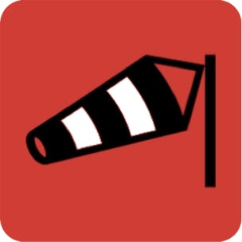

Pour toutes les activités liées à l’utilisation du vent (voile, parapente,…) l’analyse de la météo permet de choisir chaque jour le ou les sites les plus favorables en fonction de leurs caractéristiques : type de site, orientations du vent, vitesse minimum …
Aujourd’hui cette analyse des prévisions météo nécessite de consulter plusieurs sites web ou apps dédiés et de décider en fonction de sa connaissance des sites.
Cependant plus le nombre de sites augmente plus cela devient compliqué.
De plus on a souvent un ou plusieurs sites de proximité pour lesquels on souhaite savoir fréquemment si les précisions météo sont conformes à l’activité. Pour ceux-ci le choix du site peut se faire à la dernière minute puisqu’ils sont de proximité.
Par contre pour les sites éloignés qui nécessitent un trajet en voiture on souhaite être informé à l’avance.
Le but de WindFX est de faciliter et d’automatiser cette analyse des prévisions météo et de présenter rapidement pour une période choisie le ou les sites favorables en fonction de critères de choix définis préalablement.
WindFx se veut universel et utilisable aussi bien par un véliplanchiste que par un parapentiste. Seuls quelques critères comme la plage de vitesse différents entre une planche à voile et un parapente.
Voici quelques exemples de recherche :
-quels sont les sites favorables pour ce week-end dans un rayon de 100km ?
-quel est le planning optimum pour les 5 jours à venir,
WindFX peut être utilisé avec toutes les activités dans lesquelles la direction et la force du vent sont à prendre en compte :
-tous les sports de glisse de bord de mer : kitesurf, planche à voile, char à voile…
-toutes les activités de vol libre : parapente, deltaplane, ..
-toutes les activités de vol radio commandé : avion, planeur, drone, vol de pente,…
Merci d’avoir téléchargé cette app. Si vous souhaitez faire des remarques ou des propositions d’amélioration ou si vous souhaitez de l’assistance, veuillez utiliser l’adresse mail ci-dessous :